Chapter 7. 심층 신경망(DNN : Deep Neural Networks)¶
1절. 심층 신경망 구조
2절. 활성화 함수
3절. 손실 함수
4절. 가중치
5절. 데이터
1절. 심층 신경망 구조¶
심층 신경망(DNN)¶
- Deep Neural Networks
- MLP(다층 퍼셉트론)에서 은닉층의 개수 증
- 은닉층을 여러 개 사용(2개 이상)
- MLP의 문제점을 해결한 형태
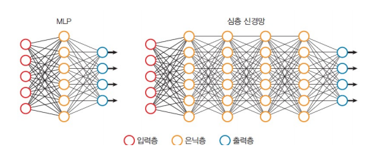
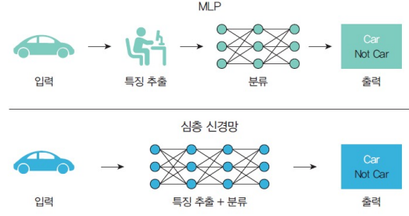
GPU의 도움¶
- DNN의 학습 속ㄷ도는 상당히 느리고 계산 집약적
- 학습에 시간과 자원이 많이 소모
- 최근 GPU(Graphic Processor) 기술의 발전으로 GPU가 제공하는 데이터 처리 기능을 딥러닝이 사용
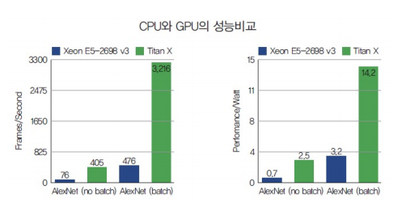
은닉층의 역할¶
- 앞단 : 경계선(edge)과 같은 저급 특징들 추출
- 뒷단 : 코너와 같은 고급 특징들 추출
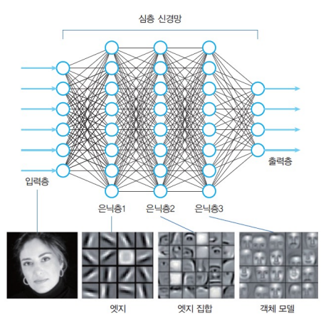
2절. 활성화 함수¶
그래디언트 소실 문제¶
-
심층 신경망에서 그래디언트가 전달되다가 점점 0에 가까워지는 현상
-
시그모이드 활성화 함수로 인해 발생
- 특성상, 아주 큰 양수나 음수가 입력되면 출력이 포화되어 0이 됨
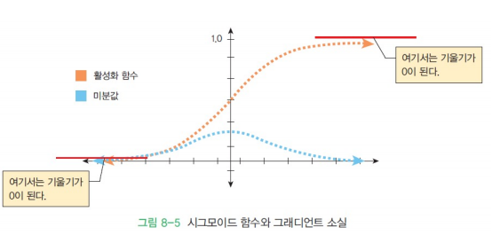
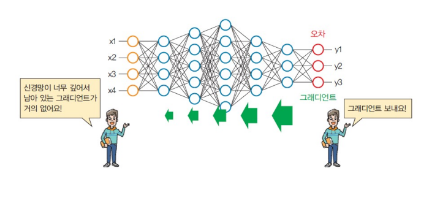
역전파 알고리즘의 복습¶
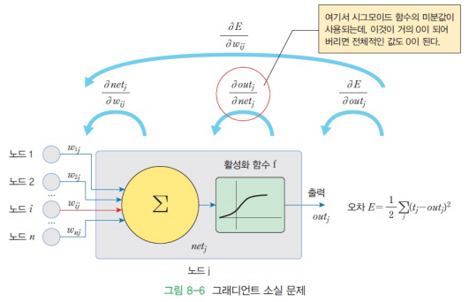
활성화 함수 : ReLU 함수¶
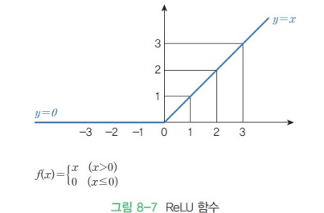
- 그래디언트 소실 문제 해결을 위해 심층 신경망에서 ReLU 함수 주 사용
다양한 활성화 함수 변경¶
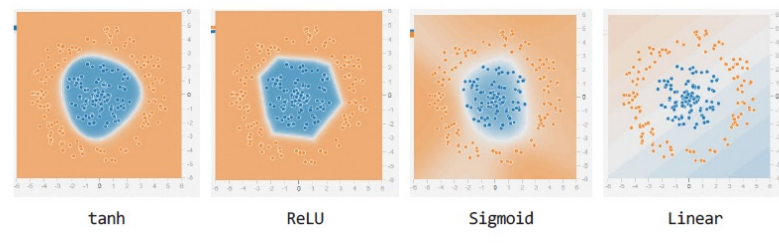
- ReLU, tanh 함수가 원만하게 분류
- Linear 다른 활성화 함수보다 부족한 모습
3절. 손실 함수¶
손실 함수 선택 문제¶
- 과거에는 평균 제곱 오차(Mean Squared Error : MSE) 사용
- 더 나은 손실 함수 존재
소프트맥스(SoftMax) 활성화 함수¶
- Max 함수의 소프트한 버전
- Max 함수의 출력은 최대 입력값에 의해 결정
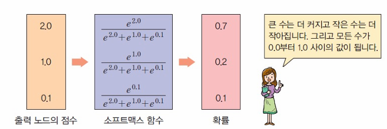
교차 엔트로피 손실 함수¶
- 2개의 확률 분포 \(p\), \(q\) 정의
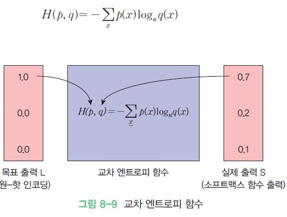
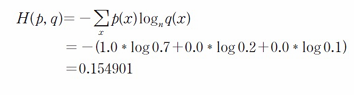
손실 함수(Loss Function)가 0 : 완벽한 일치¶
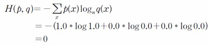
- 학습이 여러번 되어질 경우, 실제 출력 S의 정확도가 상승하여 손실 함수(Loss Function)이 0에 가까워지도록 설정
교차 엔트로피 계산 예제¶
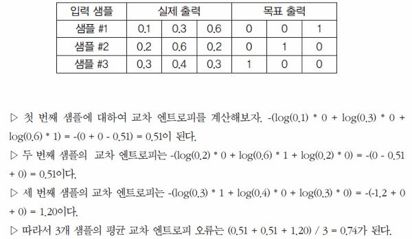
- 샘플 #3의 교차 엔트로피가 가장 큼 : 손실 함수(Loss Function)값이 가장 큼
평균 제곱 오차 VS 교차 엔트로피¶
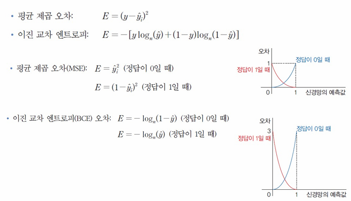
케라스에서의 손실 함수¶
- BinaryCrossEntropy : 이진 교차 엔트로피(BCE)로 이진 분류 문제 해결에 사용
- 분류해야 하는 부류(클래스)가 2개일 경우 사용
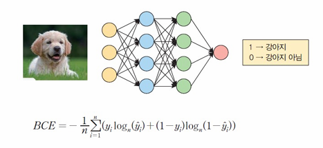
계산 예제¶
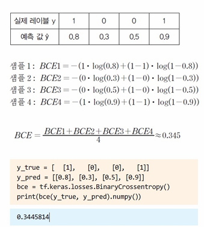
다중 분류 엔트로피¶
CCE¶
- CategoricalCrossEntropy : 분류해야 할 부류(클래스)가 2개 이상일 경우 사용
- 정답 레이블을 원-핫 인코딩으로 제공
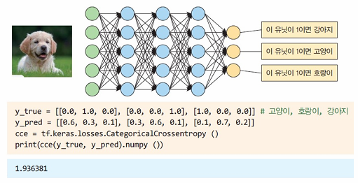
SCE¶
- SparseCategoricalCrossEntropy : 정답 레이블이 원-핫 인코딩이 아닌 정수로 주어질 경우 사용
- 정답 레이블이 0(강아지), 1(고양이), 2(호랑이)인 경우
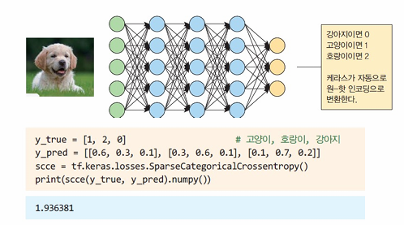
4절. 가중치¶
가중치 초기화 문제¶
- 가중치 \(w1, w2, w3, w4\)와 가중치\(w5, w6, w7, w8\)이 모두 같은 값으로 설정된 경우
- 노드 \(E\)와 노드\(G\)는 완벽한 일 실행
- 이것을 방지하기 위한 "균형 깨뜨리기(Breaking The Symmetry)" 필요
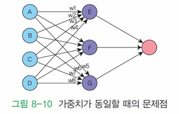
난수 가중치 초기값¶
- 가중치의 초깃값은 난수로 결정
- 반대로 너무 큰 가중치는 그래디언트 폭발(Exploding Gradients) 발생
- 학습이 수렴하지 않고 발산
Xavier 방법¶
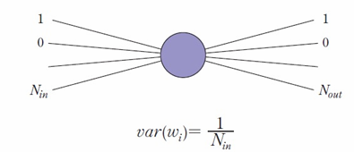
He 방법¶
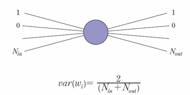
Data Load¶
def load_mnist() :
digits = load_digits()
x_data = digits.data
y_data = digits.target
x_trainf, x_test, y_trainf, y_test
= train_test_split(x_data, y_data, test_size = 0.3)
X_valid, X_train = x_trainf[:50] , x_trainf[50:]
y_valid, y_train = y_trainf[:50], y_trainf[50:]
return X_valid,X_train,y_valid,y_train,x_test,y_test
기존 가중치 초기화 방법¶
def makemodel(X_train, y_train, X_valid, y_valid):
model = keras.models.Sequential()
model.add(keras.layers.Flatten(input_shape=[28, 28]))
model.add(keras.layers.Dense(300, activation="relu"))
model.add(keras.layers.Dense(100, activation="relu"))
model.add(keras.layers.Dense(10, activation="softmax"))
model.summary()
서로 다른 가중치 초기화 방법¶
def makemodel(X_train, y_train, X_valid, y_valid, weight_init,):
model = keras.models.Sequential()
model.add(keras.layers.Flatten(input_shape=[28, 28]))
model.add(keras.layers.Dense(300, kernel_initializer=weight_init, activation="relu"))
model.add(keras.layers.Dense(100, kernel_initializer=weight_init, activation="relu"))
model.add(keras.layers.Dense(10, kernel_initializer=weight_init, activation="softmax"))
model.summary()
정확도, 손실 함수 비교¶
model_xavier, hist_xavier
= makemodel(X_train, y_train, X_valid, y_valid,'glorot_uniform')
model_RandomNormal, hist_RandomNormal
= makemodel(X_train, y_train, X_valid, y_valid,'RandomNormal')
model_he, hist_he
= makemodel(X_train, y_train, X_valid, y_valid,'he_normal')
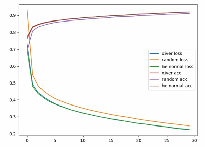
- He 나 Xiver의 정확도와 손실함수가 더 좋은 모습
5절. 데이터¶
범주형 데이터 처리¶
- 입력 데이터 중 여러 가지 카테고리를 가진(female, male 등) 데이터들 존재 => 숫자로 변환
for ix in train.index:
if train.loc[ix, 'Sex']=="male":
train.loc[ix, 'Sex'] = 1
else:
train.loc[ix, 'Sex'] = 0
범주형 데이터 변환 방법¶
- 정수 인코딩(Integer Encoding) : 각 레이블이 정수로 매핑
- 원-핫 인코딩(One-Hot Encoding) : 각 레이블이 이진 벡터에서 매핑
- 임베딩(Embedding) : 범주의 분산된 표현 학습(자연어 처리)
정수 인코딩(Integer Encoding)¶
- sklearn 라이브러리의 Label Encoder 클래스 사용
import numpy as np
X = np.array([['Korea', 44, 7200],
['Japan', 27, 4800],
['China', 30, 6100]])
# 0번째 인덱스(Korea, Japan, China) 값만 변환
from sklearn.preprocessing import LabelEncoder
labelencoder = LabelEncoder()
X[:, 0] = labelencoder.fit_transform(X[:, 0])
print(X)
# 출력
# [['2' '44' '7200']
# ['1' '27' '4800']
# ['0' '30' '6100']]
원-핫 인코딩(One-Hot Encoding) : sklearn 라이브러리¶
- 단 하나의 값만 1, 나머지는 모두 0인 인코딩
- 가장 많이 사용
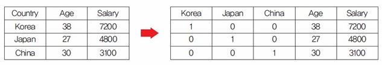
import numpyas np
X = np.array([['Korea', 44, 7200],
['Japan', 27, 4800],
['China', 30, 6100]])
from sklearn.preprocessingimport OneHotEncoder
onehotencoder= OneHotEncoder()
# 원하는 열로 2차원 배열을 만들어 전달
XX = onehotencoder.fit_transform(X[:,0].reshape(-1,1)).toarray()
print(XX)
X = np.delete(X, [0], axis=1) # 0번째열삭제
X = np.concatenate((XX, X), axis = 1) # X와 XX 붙이기
print(X)
# 출력
# [[0. 0. 1.]
# [0. 1. 0.]
# [1. 0. 0.]]
# [['0.0' '0.0' '1.0' '44' '7200']
# ['0.0' '1.0' '0.0' '27' '4800']
# ['1.0' '0.0' '0.0' '30' '6100']]
원-핫 인코딩(One-Hot Encoding) : 케라스(keras) 사용¶
- 케라스의 to_categorical() 호출로 구현 가능
class_vector =[2, 6, 6, 1]
from tensorflow.keras.utils import to_categorical
output = to_categorical(class_vector, num_classes = 7, dtype ="int32")
print(output)
# 출력
# [[0 0 1 0 0 0 0]
# [0 0 0 0 0 0 1]
# [0 0 0 0 0 0 1]
# [0 1 0 0 0 0 0]]
데이터 정규화¶
- 신경망 : 일련의 선형 조합과 비선형 활성화 함수로 차이가 존재하는 입력을 결합하여 학습
- 입력과 관련된 매개 변수도 서로 다른 범위로 학습
- 입력값이 -1.0에서 1.0 범위
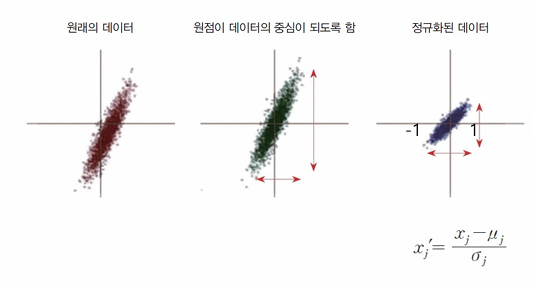
데이터 정규화¶
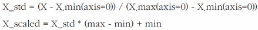
sklearn 데이터 정규화¶
from sklearn.preprocessing import MinMaxScaler
data = [[-1, 2], [-0.5, 6], [0, 10], [1, 18]]
scaler = MinMaxScaler()
scaler.fit(data) # 최댓값, 최솟값 탐색
print(scaler.transform(data)) # 데이터 변환
# 출력
# [[0. 0. ]
# [0.25 0.25]
# [0.5 0.5 ]
# [1. 1. ]]
keras 데이터 정규화¶
- 데이터 정규화 필요 시 Normalization 레이어 삽입
adapt_data = np.array([[1.], [2.], [3.], [4.], [5.]], dtype=np.float32)
input_data = np.array([[1.], [2.], [3.]], np.float32)
layer = Normalization()
layer.adapt(adapt_data)
layer(input_data)
# <tf.Tensor: shape=(3, 1), dtype=float32, numpy=
# array([[-1.4142135 ],
# [-0.70710677],
# [ 0.
# ]], dtype=float32)>
과잉 적합(Over Fitting)¶
- 지나치게 훈련 데이터에 특화되어 실제 적용 시 좋지 못할 경우
과잉 적합 확인 방법¶
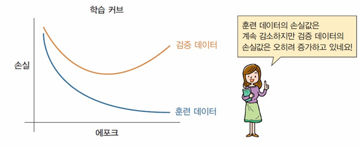
- 검증 데이터를 훈련하며 손실 함수의 값이 증가
- 항상 많은 데이터를 학습하는 방법은 옳지 않음
과잉 적합 확인 예시 : 영화 리뷰 예측¶
- 영화 리뷰 : 긍정 or 부정으로 분류
import numpyas numpy
import tensorflowas tf
import matplotlib.pyplotas plt
# 데이터 다운로드
(train_data, train_labels), (test_data, test_labels)
= tf.keras.datasets.imdb.load_data(num_words=1000)
# imdb를 활용하여 많이 사용되는 단어 1000개 추출
# 원-핫 인코딩 변환 함수
def one_hot_sequences(sequences, dimension=1000):
results = numpy.zeros((len(sequences), dimension))
for i, word_indexin enumerate(sequences):
results[i, word_index] = 1.
return results
train_data= one_hot_sequences(train_data)
test_data= one_hot_sequences(test_data)
# 신경망 모델 구축
model = tf.keras.Sequential()
model.add(tf.keras.layers.Dense(16, activation='relu',
input_shape=(1000,)))
model.add(tf.keras.layers.Dense(16, activation='relu'))
model.add(tf.keras.layers.Dense(1, activation='sigmoid'))
model.compile(loss = 'binary_crossentropy',
optimizer = 'adam',
metrics = ['accuracy'])
# 신경망 훈련
history = model.fit(train_data, train_labels,
epochs = 20, batch_size = 512,
validation_data = (test_data, test_labels),
verbose = 2)
# 훈련 데이터의 손실값과 검증 데이터의 손실값 출력
history_dict= history.history
loss_values= history_dict['loss']
# 훈련데이터 손실 값
val_loss_values= history_dict['val_loss']
# 검증데이터 손실 값
acc = history_dict['accuracy']
# 정확도
epochs = range(1, len(acc) + 1)
# 에포크수
plt.plot(history.history['loss'])
plt.plot(history.history['val_loss'])
plt.title('Loss Plot')
plt.ylabel('loss')
plt.xlabel('epochs')
plt.legend(['train error', 'valerror'], loc='upper left')
plt.show()
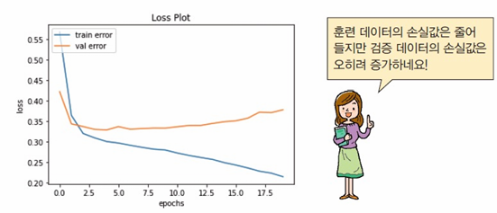
- 과잉 적합이 존재하여 손실값이 존재
과잉 적합 방지 전략¶
- 조기 종료 : 검증 손실이 증가하면 훈련 조기 종료
- 가중치 규제 방법 : 가중치의 절댓값 제한
- 데이터 증강 방법 : 데이터 다수 생성
- 드롭 아웃 방법 : 몇 개의 뉴런 사용 중지
조기 종료(Early Stopping)¶
- 검증 손실이 더 이상 감소하지 않는 것처럼 보일 때마다 훈련 중단
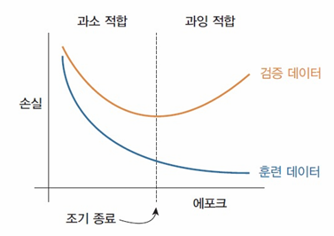
가중치 규제¶
- 가중치의 값이 너무 크면 판단 경계선이 복잡해지고 과잉 적합이 발생하므로 규제 진행
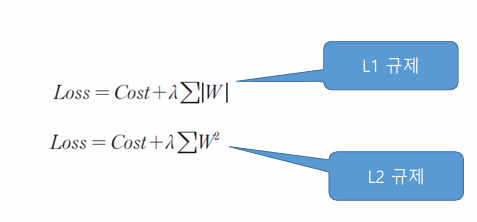
model = tf.keras.Sequential()
model.add(tf.keras.layers.Dense(16,
kernel_regularizer = tf.keras.regularizers.l2(0.001),
activation='relu', input_shape=(1000,)))
model.add(tf.keras.layers.Dense(16,
kernel_regularizer=tf.keras.regularizers.l2(0.001),
activation='relu'))
model.add(tf.keras.layers.Dense(1, activation='sigmoid'))
드롭 아웃¶
- 일부 노드를 랜덤 제외
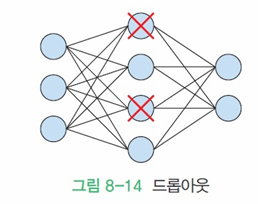
model = tf.keras.Sequential()
model.add(tf.keras.layers.Dense(16,
activation='relu', input_shape=(10000,)))
model.add(tf.keras.layers.Dropout(0.5))
model.add(tf.keras.layers.Dense(16, activation='relu'))
model.add(tf.keras.layers.Dropout(0.5))
model.add(tf.keras.layers.Dense(1, activation='sigmoid'))
데이터 증강(Data Augmentation)¶
- 소량의 훈련 데이터에서 많은 훈련 데이터 추출
앙상블¶
- 여러 전문가를 동시에 훈련
- 동일한 딥러닝 신경망 N개 생성
- 각 신경망을 독립적으로 학습시킨 후 결합
모델 구축¶
model = tf.keras.models.Sequential()
model.add(tf.keras.layers.Dense(16, activation='relu',
input_shape=(2,)))
model.add(tf.keras.layers.Dense(8, activation='relu'))
model.add(tf.keras.layers.Dense(1, activation='sigmoid'))
# 0 ~ 1 바이너리의 출력을 위해 sigmoid 함수 사용
model.compile(loss='binary_crossentropy',
optimizer='adam',
metrics=['accuracy'])
model.fit(train, target, epochs=30, batch_size=1, verbose=1)
- 바이너리 값이 10개
- activation = softmax
- loss = sparse_categorical_crossentropy
- 바이너리 값이 2개(0, 1)
- activation = sigmoid
- loss = binary_crossentropy